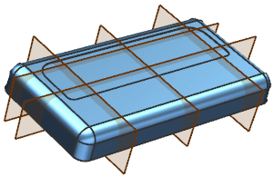
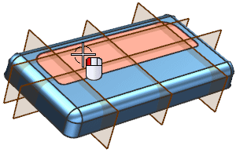
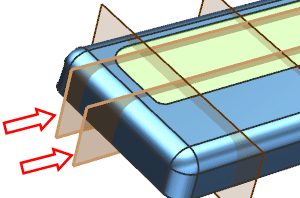
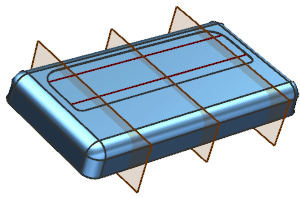

Create two section curves
-
Open des18_85_isolate_object_3.

You will first create section lines that will be used for creating the intersection points for location the isolate object features.
-
On the Curve toolbar, click Section Curve
 .
.
-
In the Object to Section group, with Select Object active, select the face shown below:

-
In the Section Plane group, with Select Plane active, select the two planes shown below:

-
Click OK.
-
Hide the two planes.
